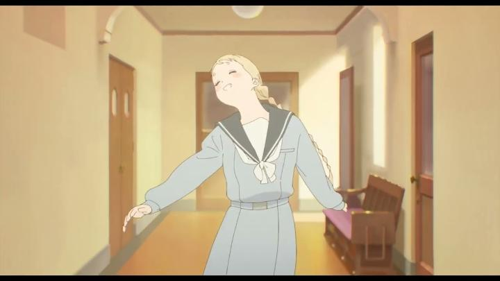

Disclaimer: Minor spoilers.I went into "The Colors Within" completely blind to what it was about, when I saw the North American release in a theatre in early 2025. To be fair, the online synopsis and trailers don't give much away about what this original story is all about. Even the posters are misleading at who I think the lead character is meant to be. What a surprise this movie was! If there was a single word to describe what I felt most of all, it would be "impressed."This is a coming-of-age story of friendship and adolescence. The lead character is Totsuko, a student in a all-girls' catholic high school. She was born with a unique form of synesthesia - she can see people as "colours," perhaps representing their aura. One person might be yellow, another might be red, etc. The opening shows Totsuko commenting how beautiful everyone's colours are. But one day, Totsuko sees fellow student Kimi, with a blue colour so beautiful that she's smitten. She can't help but giggle at the thought of her. When trying to find her again, she learns Kimi had just dropped out of school, and eventually tracks her down in a small bookshop. When trying to start a conversation, and when another customer (a teenage boy named Rui) mentions Kimi's guitar, Totsuko suggests the three start a band together. The others like the idea, and they begin hanging out to practice music and songwriting in an abandoned church on Rui's nearby island village. Totsuko is the only one without any sense for music, but at least this lets her spend time with Kimi...There are several unique aspects to the characters and setting here. The biggest one is the personalities and definitions of the three main characters. All three seem to be on the disorder spectrum, telling based on how they speak, how they fidget, and how they struggle with school or communicating with their parents. This is particularly true with Totsuko, and to a lesser extent with Rui (a later scene shows him giving a very cute reaction when the other two visit him after a brief absence). The movie never explicitly states any such medical state for the three characters, so this is just my personal reading. Regardless, it never judges them for their awkwardness. Right there, I can't think of any anime with a cast with these types of personalities. Further, this story is a coming-of-age tale of romance. Totsuko's reaction to Kimi suggests that she's gay, but maybe hasn't quite realized it yet (although that might be too much of a generalized label - she may just be attracted to people with especially beautiful "colours," regardless of gender). But there's a hint that Kimi and Rui, as the friendship grows, each of secret crushes for each other. Again, the movie never explicitly states these things, only giving hints for you to make your own conclusions if you pay attention. This is why "The Colors Within" left me stunned in how much it impressed me: it's portraying complex but relatable characters, and is confident in the viewer to absorb them without explicitly stating everything. It's perfectly comfortable holding back. I mentioned the two girls attend a catholic school. Christianity and the church is a big part of the setting: Totsuko, being a good student, is religious, participating in confession and perhaps too often praising God and saying "Amen," even in the songs she writes for the band. The nuns of the school watch over the students with their best interests in mind, with one young nun being particularly sympathetic to the girls having their adventure with music. From the previous two paragraphs, you might expect religion to be a factor of judgement for the kids to feel guilty, but that's not at all the case here. The church and school are welcoming and understanding. For viewers specifically looking for a "Christian" anime, this is an excellent pick without preaching its doctrine to viewers who don't care for it.  The film as a whole feels remarkably welcoming. The drama comes from the three kids being unable to open up to their parents and caregivers (primarily about either quitting school or starting their band), a relatable theme for anyone who was at that age, and a relatively minor thing in the grand scheme of life. There aren't any big tearjearker scenes. The ending (or rather, multiple conclusions that keep pushing back the ending) again doesn't explciitly say a lot, but feels profound. The writing and direction is, again, impressive. Keep in mind that my continous praise doesn't mean this is exceptionally awesome... there aren't any major "wow" hooks to get excited for... but for a cozy film of this genre, this feels like an elevated level I've never seen before. My theatre screening was the original Japanese audio... I had no idea there was already an English dub (it's not clear whether my city even offered this screening option), which even goes as far as to sing the songs with English lyrics! It includes Kylie McNeill as the voice for Kimi, after her standout performace in the dub for 2021's "Belle," so I look forward to hearing it at a later date. Anyway, from a limited sample in an online trailer, I'd say it sounds plenty good, but that the Japanese version may be the best way to go (with subtle drama anime like this, that's usually the case). The original music (vocal songs that the characters sing) is surprisingly cute and peppy, although a bit awkward, because it's supposed to be (we're to imagine that teenagers with no experience wrote these). Finally, the production values, which might be the one weakness. Having gone in blind, I had no idea this film was animated by Science Saru. By appearance, you'd be forgiven for not knowing that, as the character design and animation doesn't match their other recent, stylized output. Visually, there are some decisions to praise - character designs are surprisingly real, especially Totsuko for being a little short and chubby, compared to anime's typical insistence to make everyone exaggeratingly beautiful and cute for marketing purposes (I suspect this is the sole reason Kimi is listed and shown as the lead character in the film's marketing, with Totsuko in the background). But the designs and backgrounds are also relatively plain when compared to other anime, including films of grander scope and budget. Surprisingly, Totsuko's ability to "see colours" isn't taken advantage of as much as I'd have liked. Animation fares a bit better - there are some shockingly well-animated scenes in the first half of the movie, portraying simple things like sitting down in a chair and writing at a desk. It's in these scenes where I recognized the talent Science Saru is known for. But this doesn't keep up for most of the movie, and again, things become fine, but a little mundane. The internet likes to discuss representation, and how diversity interferes with writing good stories. That can absolutely be true, but when both are considered together with appropriate levels of importance, we can get something truly remarkable that we haven't seen before. In the case of "The Colors WIthin," it's precisely that diversity in these characters that makes them lovable and relatable, and it's precisely what makes their story meaningful. For that story to be written and portrayed as well as this further elevates it. For my personal tastes towards the genre, this won't be my favourite film of all time, but when the credits rolled in the theatre, my jaw was agape and eyes wide for the story I watched, purely for how unique it was and the quality of direction. That's an amazing feeling, and I'd love everyone to experience it.
- "Ani" More reviews can be found at : https://2danicritic.github.io/ Previous review: review_The_Cathedral_of_New_Emotions Next review: review_The_Comic_Artist_&_His_Assistants